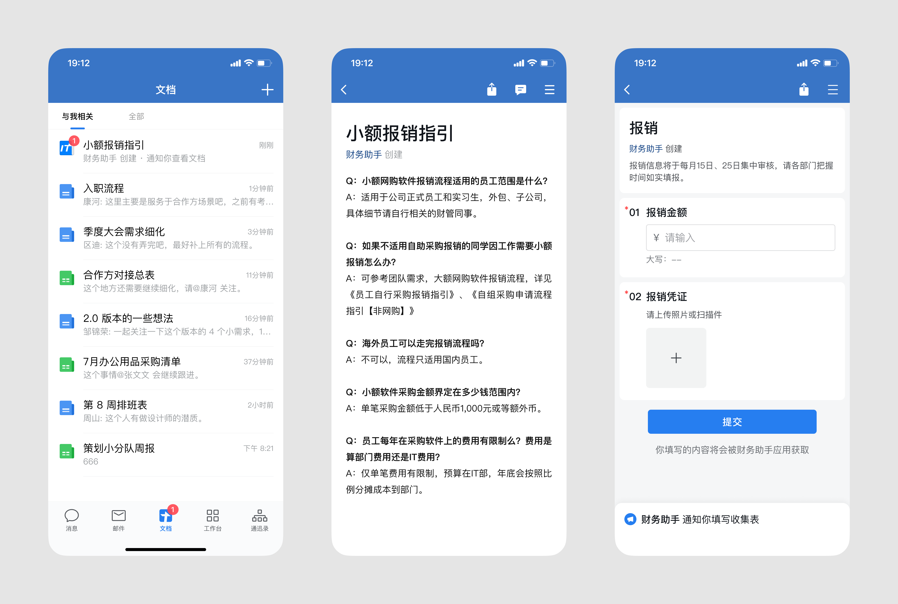
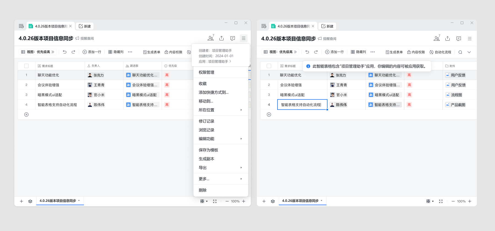

概述
最后更新：2025/07/16
目录
企业和开发者通过文档接口可以便捷地新建文档和表格，将项目进展、业务数据等通知给成员，提高信息流转效率；也可通过文档接口新建智能表格（目前仅支持企业新建），邀请成员协作编辑，与业务系统结合更紧密；还可通过接口新建收集表，收集员工信息。
调用接口的应用自动成为文档创建者，所建的文档、表格和收集表，仅应用可编辑内容；所建的智能表格，应用和成员均可编辑内容，内容也可被应用获取。创建后，应用可通过接口管理文档，也可指定成员作为文档管理员辅助管理。![]() 提示
提示
调用接口的应用自动成为文档创建者，所建的文档、表格和收集表，仅应用可编辑内容；所建的智能表格，应用和成员均可编辑内容，内容也可被应用获取。创建后，应用可通过接口管理文档，也可指定成员作为文档管理员辅助管理。
提示应用仅可读取和编辑自己创建的文档，无法编辑成员创建的文档；应用通过接口创建文档后，即可获得docid。docid仅在创建时返回，需要开发者妥善保存。
接口创建文档表现
- 接口创建的文档和收集表将在文档应用中标识出应用创建的信息，文档图标也将替换为应用图标。
- 接口创建的文档和收集表可添加企业成员进入通知范围，仅应用可编辑文档内容，成员无法编辑，但指定的管理员可以修改通知范围和获取收集表数据。
- 通过接口创建、修改、删除文档或收集表后，文档应用将自动向文档或收集表相关成员推送通知。

接口创建智能表格的表现
- 接口创建的智能表格将在智能表格中标识出应用创建的信息。
- 应用自动加入智能表格，成员可查询应用信息。
- 成员首次编辑智能表格时，展示 应用可获取编辑内容 提示。

配置可调用文档接口的应用
应用在调用文档接口前，需要先获得文档的使用权限。
自建应用
登录企业微信管理端，进入「协作」-「文档」-「API」，配置「可调用接口的应用」。
第三方应用
第三方服务商创建应用的时候，需要开启“文档接口权限”，企业授权安装第三方应用之后，第三方应用即拥有了调用文档接口的权限
代开发应用
第三方服务商为企业配置代开发应用时，需要开启「文档接口权限」，企业管理员确认之后，应用即拥有文档权限。
注意事项
- 企业微信需更新至4.0.20及以上版本。